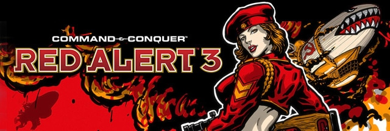
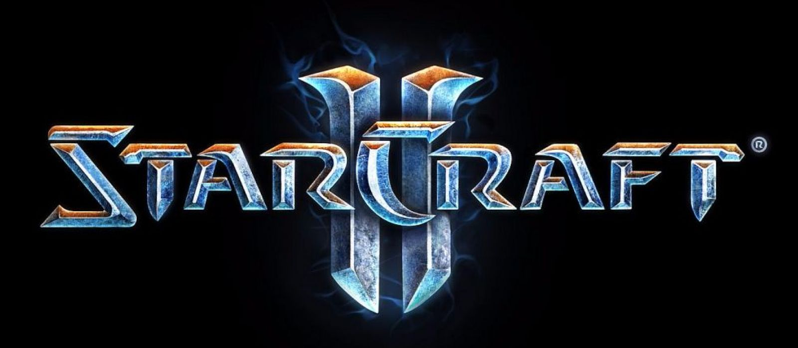

Games Available:

Command & Conquer: Red Alert 3 is a 2008 real-time strategy game developed by Electronic Arts Los Angeles. It is the third major installment in the Red Alert series and features the original two factions, the Allies and the Soviet Union, joined by the newly introduced Empire of the Rising Sun, a high-tech fictionalized Japanese army.

StarCraft II is a military science fiction video game created by Blizzard Entertainment as a sequel to the successful video game StarCraft, released in 1998. The game is set in a fictional future and focuses on the galactic struggle for dominance among various fictional StarCraft races.